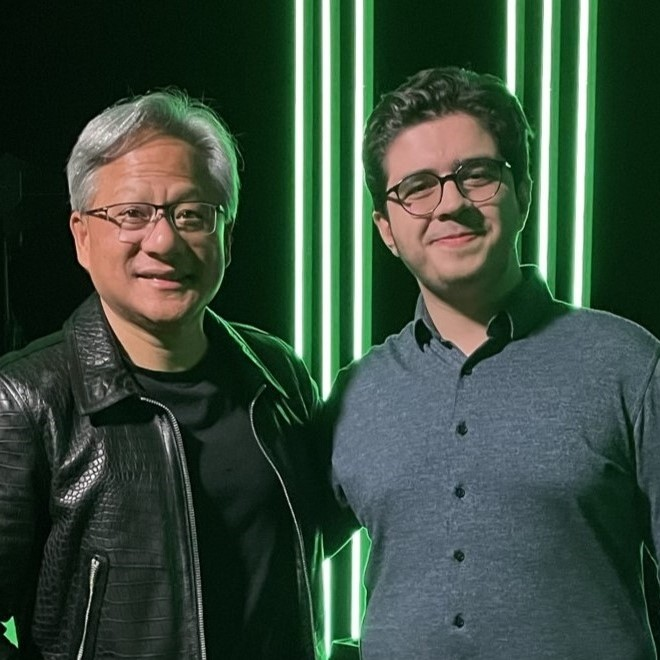

media
Here's a nice recollection of my past.
-
Me and Jensen Huang!
I was invited to an AI conference in January 2023 in Stockholm by NVIDIA, where I got the chance to meet him.
image
| linkedin post
-
kAi Wins 2 Awards!
Our university awarded us with 2 awards for extraordinary achievement and contribution to internationalization, digitalization and technological development.
image
| linkedin post
-
kAi Team in Ankara
We were invited to the Digital Transformation Office of the Presidency of Turkey to discuss AI policy in universities.
image
| linkedin post
-
A second award
Upon being awarded by IVA (see below) I was awarded by the National Committee of Education in Siirt for my achievement.
image
| news article
-
Interview after award
After the award by IVA (below), I was interviewed by national TV for my achievement.
image
| interview
-
Award from Sweden
Together with my team, our project "United in Crisis" was chosen for "Innovation in times of Crisis" award during the Covid-19 pandemic by the Swedish Royal Academy of Engineering Sciences (IVA).
news article - swedish
| news article - turkish
-
Earlier past: Presenting a project in Ankara
High school, I was presenting my work on efficient green energy production with solar panels in Ankara.
image
| news article
| presentation - turkish
-
Earlier past: Founding a Robotics Club in the Middle East
During high school, I have founded the Robotics club in high school. Now where I'm from, this ain't so usual. We got interviewed by the national news agency after getting qualified for a FRC grant.
image
| news article
| interview - turkish
-
Earlier past: Robot avoiding obstacles
High School, Built this thing in a half hour for a science fair. Simple as it is, folks were impressed.
full image
| demonstration - turkish